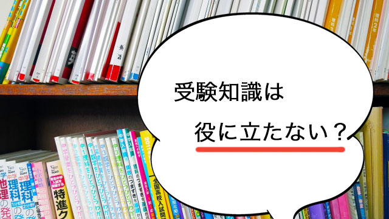

受験シーズンに突入しました。受験生は最後の追い込みに必死かもしれません。
ところで世間ではどうもこの「受験勉強」の評判がよろしくない！
「受験のために詰め込んだものは身につかない」
「受験勉強はしょせん受かるための勉強、だから真の学力にはならない」
「受験勉強はテクニックに走りがちで学問とほど遠いものだ」
「日本の受験教育は記憶力ばかり問うからダメだ」
これらの受験勉強悪者論は今に始まったものではなく昔から繰り返し言われてきたことです。
さらに歴史をさかのぼると、明治時代から日本の教育では学歴を手に入れることで社会的に「出世」しようとする学歴獲得競争が長く行われてきたという背景があり、「手段」としての受験勉強を何か純粋じゃないもの、若者に負担を強いる過酷でつらいものという暗いイメージがつきまとってきたのです。
私も実は、日本の「受験」を中心にすえた教育のあり方には大きな疑問を持つ一人です。
特に覚えることばかりの暗記主義のテストが幅をきかせてきた結果、もっとも大切な「考える力」「創造性」が犠牲になってきたことはその通りだと思っています。
だからこそ、2020年からの大学入試改革もあるわけです。
これまでの「受験の弊害」は確かに大きかった。
受験生の負担も大きかった（今もそうですが）。
だから親の中にも、高校入試や大学入試という過酷な受験を忌避し、我が子を早くから大学付属などに入れようとする人も出てくるわけです。
「早くから私立（付属）に入れた方が後が楽だから……」
「できれば小学校か中学校で私立（付属）に入って後はノビノビ過ごさせたい」
こういう親の感想も当然出てくるわけで、私自身何度も聞かされてきました。
しかし受験勉強は本当に役に立たないものでしょうか。
受験勉強には何のプラスもないというのは事実でしょうか。
なかば常識と化してしまった受験勉強悪者論。
今回はあえて「受験勉強の良い面」について話してみたいと思います。
受験がなければ誰も勉強しない
受験勉強にも良い面はある。役に立つことも十分あると言えば「えっ」と思う人もいるかもしれませんが、不思議でも何でもないのです。
まず受験があるからこそ、そのために勉強するのだという“事実”そのものが雄弁に受験勉強の意義を物語っているからです。
考えてもみて下さい。定期テストも含め、もしテスト（試験）というものがなかったら誰が真剣に勉強するでしょうか。もちろん勉強そのものが好きで熱心にやる人もいるでしょうがごく僅かです。
まして入試があり、それに受からないといけないという「現実」の前には一定期間の勉強がどうしても必要です。
一年なり半年なりの準備は必要だし、受験する以上はたとえ数ヶ月であっても体系的に勉強せざるを得ない。
この“体系的に勉強せざるを得ない”ところがポイントです。たとえば中学1、2年のときはよく分からなかった分野が高校入試の勉強を体系的にすることでつながることがあります。
こういったケースは全体像をある程度把握できたから、部分同士が意味ある全体として統合された結果といえるでしょう。
たとえ「詰め込み」であっても、短期集中のおかげでそれまで理解していなかった分野、漠然としか分かっていなかった領域が突然霧が晴れるようにスッキリと分かるのです。
もし受験勉強がなかったらそれらは分からないままだったでしょう。
おかげでその教科の面白さに目覚めることだって起こり得るのです。
さらに受験勉強では、教科の重要ポイントを効率よく覚えられる利点があります。受験用の参考書や塾などで必ず「試験に出やすいポイント」が叩き込まれますが、これは意外にバカにできないのです。
というのも、受験によく出る必須ポイントはやはりその教科にとって最低限かつ重要知識だからです。
重要だからこそ試験に出るわけです。
英語の文法や構文なども暗記させられた経験があると思いますが、重要単語も含めてそれら「必須項目」は英語の論文や物語を読むに際してどうしても知っておくべきものです。受験を機会に一気にそれらを詰め込んでおくことが後々─大学などに入ったとき─役に立つことを考えれば、むしろ効率的に勉強できたということになります。
だいぶ昔ですが、私がかつて都内の私立高校で英語を教えていたときこんなことがありました。
高3なのに、あるクラスで大半の生徒が中学生段階で知っておくべき知識がないことに気づいたのです。細かいことは忘れましたが、確かso～that…can'tをtoo～toに書き換えるというような、およそ誰でも知っているレベルの知識です。
後で判明したのは、そのクラスの全員がたまたま付属の中学から上がってきた、つまり高校受験をしていない子たちだったことです。
高校受験生なら当然叩き込まれる知識が、彼らは受験勉強を免れていたために高3段階でスッポリ抜け落ちていたのです。
この高校は都内でも有数の進学校だっただけに非常に驚いたのを覚えています。
受験知識は役に立つ
多くの人が中学や高校で習った知識を全部忘れているわけではなく、ある程度覚えていられるのも受験勉強を必死でやったおかげではないでしょうか。
受験勉強がまったくなかったら、それこそ残っている知識はゼロに近いはずです。
そして「考える力」が大事、「創造性」が大事といっても、知識が全然なかったらそもそも考えることさえできません。
何かを思考するためには知識が必要だからです。
少なくともまともに何かを考えたり、発想したり創造するにはその元となる素材、つまり知識を使うしかなく、無（ゼロ）から何かを生み出すことはできません。
大学での学問をきちんと修めようとする人間にとって、やはり高校レベルの知識は必須であり、そのことを無視して「覚えるより考える力」などというのはそれこそ机上の空論に聞こえます。
個人的な話になりますが、私も大学受験のために詰め込んだ「世界史の知識」がその後の人生で大いに役立った経験があります。
元々歴史は好きな教科ではあったものの、高校では熱心に勉強しなかったので断片的にしか覚えていなかった知識が、受験勉強のおかげで体系化され様々な発想の土台になったことは確かです。
たとえばギリシャやローマの盛衰を知ることで、国家だけでなく個人の人生の浮き沈み─生まれ発展しピークを迎えやがて衰退していくという─サイクルを実感したこと。このことはやがて私が組織づくりやスタッフのモチベーション維持、さらには新しい仕組みを創造したりする上で有形無形の力になってくれたと感じます。
また広い意味での因果関係を学べたのも収穫です。
たとえばロシアの歴史です。
寒冷地に閉ざされ孤立を余儀なくされてきたロシアは軍事的に拡大するためには「不凍港」（冬でも凍らない港）を手に入れる必要がある。軍艦を出航させるためですね。だからロシアは拠点たる港を獲得するために南を目指す。いわゆる南下政策です。
近代に入るとロシアはクリミアやアフガンそして満州にまで進出し紛争が起こるわけです。
それはインドに権益を持つイギリスとの対立を促し、一方で中国大陸進出をうかがう日本とも対立する。そして利害を同じくする日本とイギリスは手を組み（日英同盟）、結果日露戦争が起こる。日露戦争は世界で初めての近代戦（大型大砲や機関銃の登場）であったため、その後の第一次世界大戦に戦略上大きな影響を与える。
ちなみにロシアの南下政策は現在でも基本政策（ポリシー）で、最近のウクライナ紛争、シリアやトルコとの複雑な関係を引き起こす要因になっています。
つまり現在を知るためにも歴史の知識は欠かせないのです。
因果といえば私はヨーロッパ近世の「宗教改革」にも興味をひかれました。権力を持ちすぎた教会の腐敗に対して起こった宗教改革はヨーロッパで宗教戦争という大混乱を生み、それに対し協会側も「改革」を起こします。その大きな運動の一つがイエズス会で、その創立者の一人に大変優秀で情熱的な男がいました。
その男こそが日本にキリスト教（カトリック）を伝えたフランシスコ・ザビエルであり、多くのキリシタン大名を生むほど布教は成功します。
しかしキリスト教が思いのほか日本に広がったことにより、後の徳川幕府は対抗手段として鎖国に踏み切ることになる。
16世紀のヨーロッパで起こった宗教改革（戦争）という一大ムーブメントの余波が、遠く離れた小さな島国にインパクトを与え、その結果として「鎖国」があり鎖国によって江戸文化という日本独自の文化風習、そして今日につながる日本人気質や精神を育んだのです。
そう考えれば大昔のヨーロッパで起こったイベント（出来事）が、私たち（現代日本人）の形成にも関わってきたことが分かります。
歴史上の出来事はこのように様々な形で人々を結びつけているのだと理解できれば、今の私たちの「在り様」が後世に影響することも実感でき、行動の選択もより大きな視点で行えるでしょう。
少なくとも私にとっては受験勉強で培った歴史的知識がその後の人生に大いに役立ったことは間違いありません。（もちろん他の教科でも同じことは言えるでしょう）
最後に
結局、受験勉強は役立たないというのは一面的にしかとらえていないということになります。
受験勉強がダメなのではなく、勉強というものを「試験のためにムリヤリ覚えるもの」というせまい枠に閉じ込める姿勢がいけないのです。
たとえそのときは味気ない思いで詰め込んだとしても、後々にその種が美しい芽を咲かせる可能性はあるのです。
それどころが、若いうちは意味が分からなくても知識の種を内蔵させておけば、人生経験の様々な局面で大きく花開く可能性は高まります。
何度も言うようですが、知識の土台がなければその上に大きな建物（創造）はたてられないからです。
そして知識を効率良く習得できるという意味で、若者にとって受験勉強はむしろ必要不可欠とさえ言えるかも知れません。
ただし、受験勉強は勉強の終わりではないということ。
ここからさらに知見を広げていくスタートであるということは認識しなければならないでしょう。
受験勉強に励む若者たちは、今の勉強が決してムダなことではなく未来の飛躍につながることを信じて頑張って欲しい。
たとえ今、目の前の合否しか考えられなくとも、勉強したことの本当の意義は後で分かるものだからです。